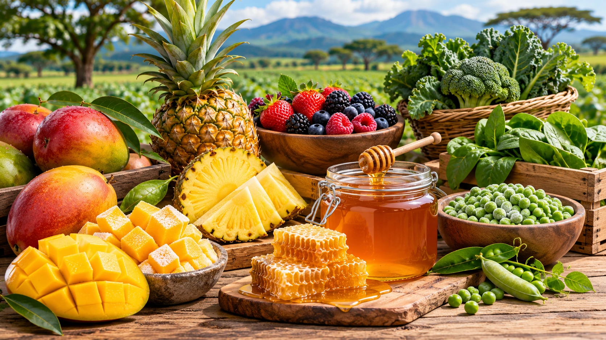
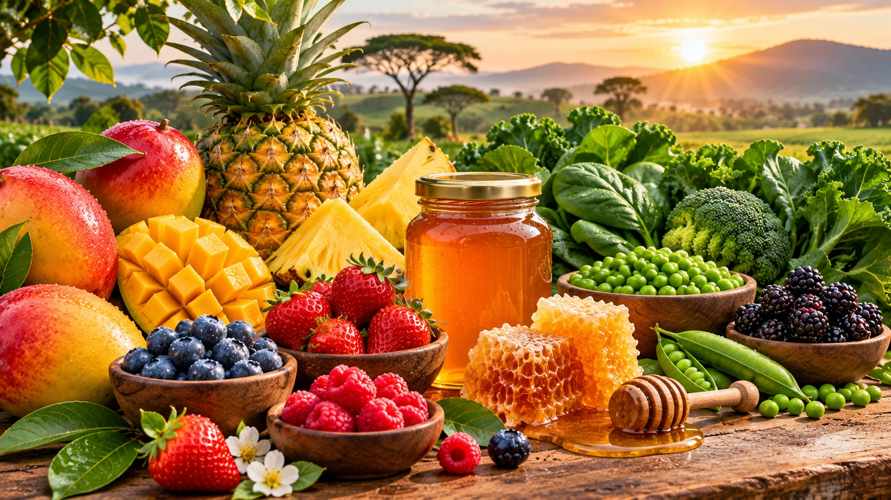
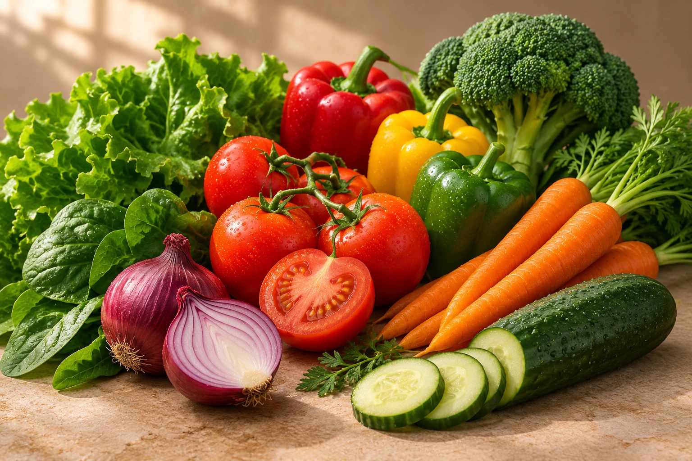

MaraTable Group · International Supply
Good food. Made memorable.
African food products for retail, foodservice and global markets
African foods for retail, foodservice and international distribution.
Fresh & frozen produceVegetablesPantry & ingredients



QUALITY
FIRST ✦
FIRST ✦
QUALITY IN
EVERY DETAIL
EVERY DETAIL
A considered approach
Food should look
Food should look
as good as it tastes.
We bring distinctive African food products to buyers and partners through careful selection and dependable supply relationships.
The MaraTable range
View all products →
Explore our African food products
From source to shelfAfrican foods for
African foods for
every market.
For retailers, distributors and foodservice partners, clarity matters. Our approach keeps the conversation focused on the products, supply needs and partnerships that move business forward.
Explore our approach →AFRICAN FOOD
SUPPLY.
SUPPLY.
01Fresh and frozen
Fresh and frozen
produce
02Vegetables and
Vegetables and
leafy greens
03Dried foods and
Dried foods and
ingredients
04Grains and
Grains and
roots
MaraTable Group initiative
Healthy Kids
Encouraging nutritious food choices and healthy eating habits for growing children.
Discover Healthy Kids →
Let's work together
Discuss your food supply requirements
Whether you are sourcing, supplying or exploring an opportunity, MaraTable is ready for a practical conversation.
Get in touch →